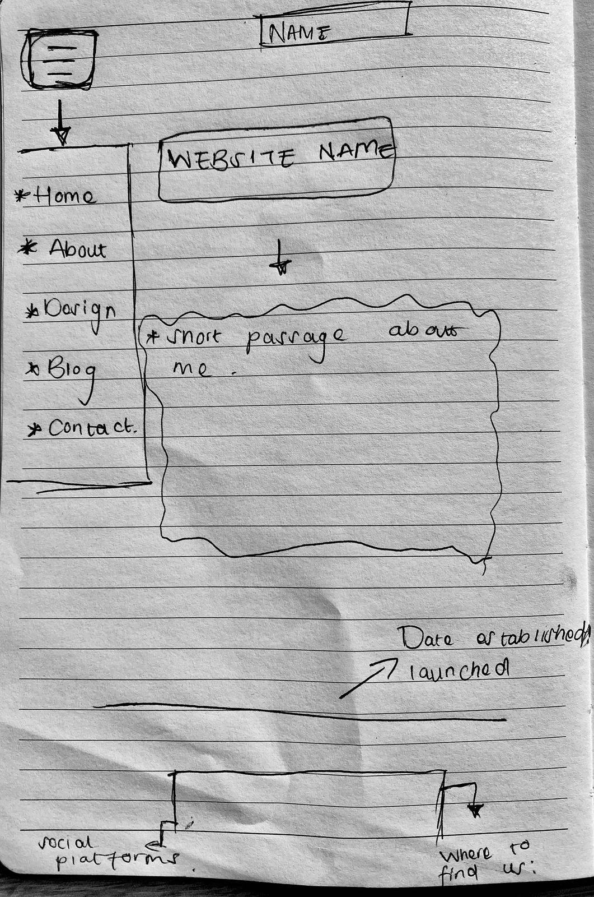

24 February, 2025
Moulthrop’s “You say you want a revolution” (2003) and McLuhan’s and the Laws of Media (1991) focus on the concept of hypertext and how it transforms communication, society and comprehension. Hypertext is seen as radical tool that interrupts collinear or continuous narratives allowing more interactivity. However, the internet today contradicts the early idealistic illusion of an unclosed space where knowledge can be shared. Today there is a personalised selection of media done by algorithms that are recommended that align with you. Large companies today such as Google etc have a huge amount of control of the internets organisational structure therefore they are able to put certain policies in place which may restrict users from posting specific content and restrict engagement as well. McLuhans’ Law of Media talks about how hypertext and electronic communication continues to transform and develop every day. They give examples of enhancement, obsolescence, retrieval and reversal to prove how the internet has continuously and still is developing.
- Images
- Styles
- Scripts
-Blogs
-Designs
1. Homepage
2. About page
3. Contact page
4. CSS file
5. JavaScript file
6. Images file
First WireFrame Ideas

https://www.christyannejones.com https://yonobi.com